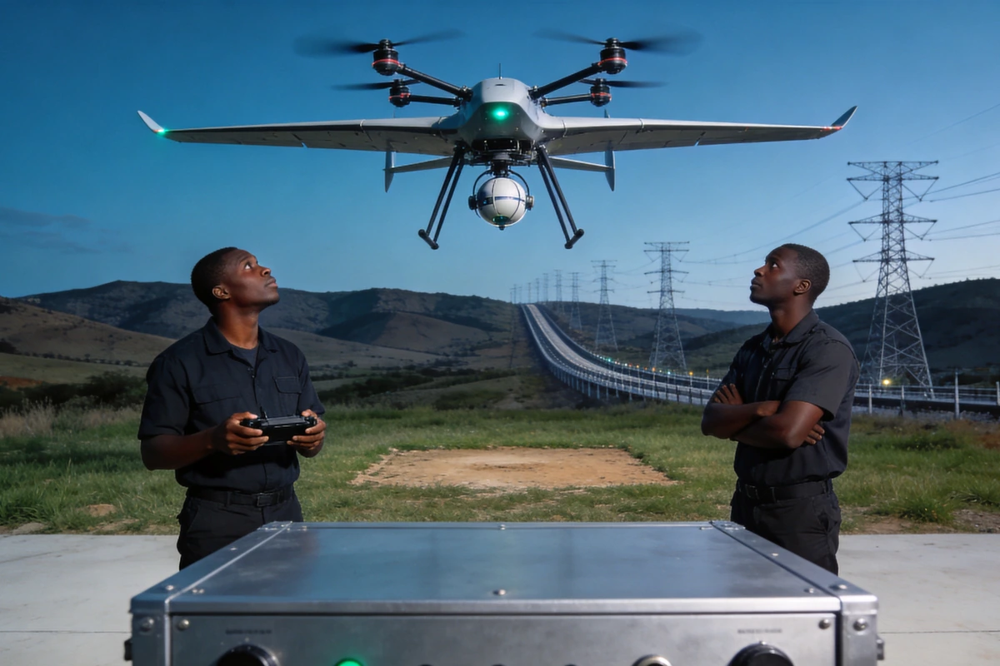
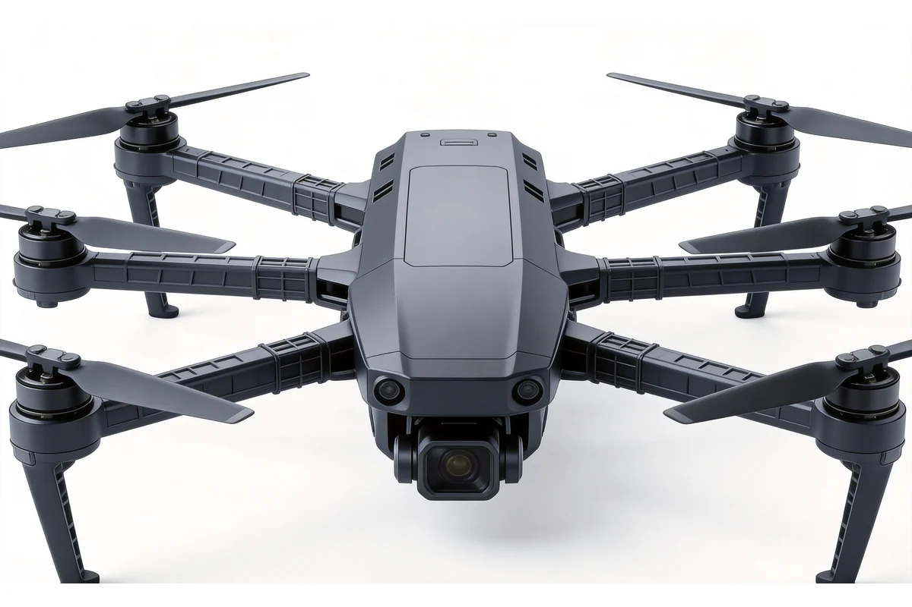
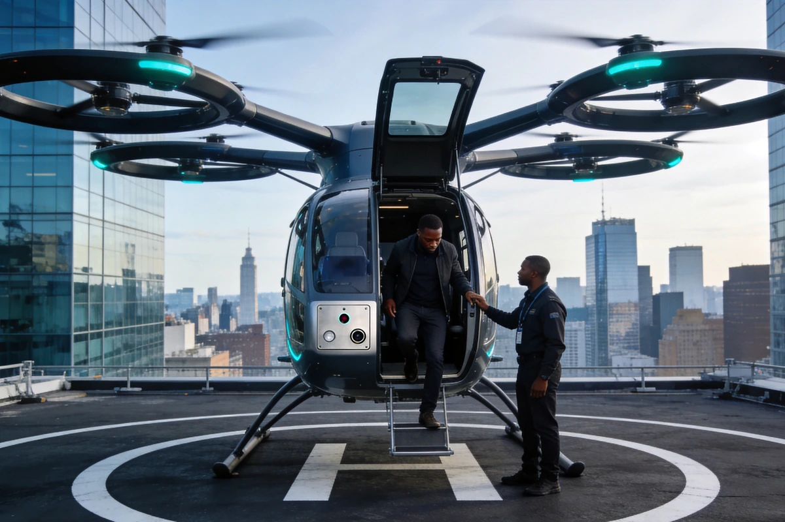
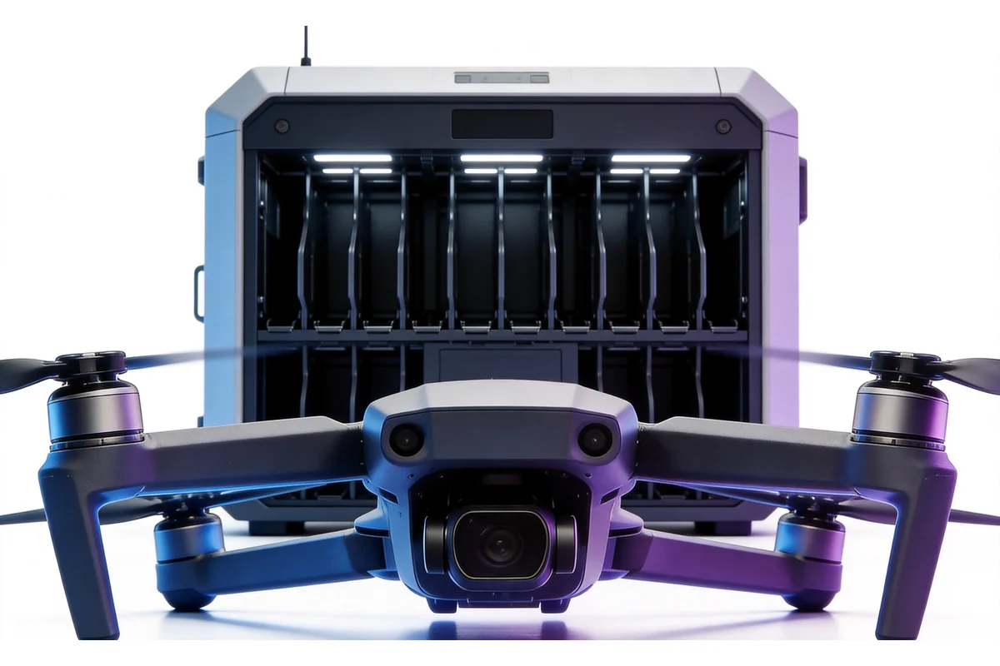

产品线由两种构型组成：复合翼无人机以四旋翼加飞翼式固定翼的复合气动布局，把旋翼的垂直起降能力与固定翼的巡航效率放在同一机体上，适用于起降场地受限但作业半径较远的测绘与巡检任务。
纵列双桨载物平台采用两副旋翼前后纵列布局，通过反转抵消扭矩、省去尾桨，在吨级起飞重量下提供高载重运输能力，用于工程与应急物资的点对点运输。
三条产品线共用同一套设计逻辑：全场景模块化载荷、自研飞控与自研地面站，任务载荷按场景换装而非按机型锁定。
复合翼垂直起降
四旋翼加飞翼布局，无需跑道即可起降，巡航段转入固定翼
大载重
纵列双桨构型覆盖五百公斤级与八百公斤级载重
长续航
载物机型续航 55 分钟与 30 分钟两档，载人机型以油动增程延长航时
模块化载荷
安防吊舱、航测相机、多光谱、喊话器与气体检测可换装
双模补能
八百伏快充与更换电池两种方式，按作业节奏配置
抗反制抗干扰
复合翼机型具备抗反制与抗干扰设计，保障任务链路稳定
型号选型
无人机平台按任务形态与地面保障方式组织类别，四个类别对应不同的构型、载荷与作业连续性要求。
无人机平台

复合翼测绘与安防无人机
- 垂直起降＋固定翼巡航，兼顾起降场地受限与远距离作业
- 地形测绘、正射与倾斜摄影、周界与管线安防巡检
- 按载荷定：安防任务配三轴增稳吊舱（可见光＋红外＋激光测距）；测绘任务配正射全画幅相机或五拼相机。安全等级要求高时选三余度飞控与双天线差分定向配置

重载载物 eVTOL
- 纵列双桨构型，吨级起飞重量下的高载重运输
- 工程物资、应急物资点对点运输，海岛与山区补给
- 按单程载重与作业半径定档：五百公斤级与八百公斤级两档；关注机身尺寸对起降场地的要求，以及快充与换电两种补能方式的场地配套

载人多旋翼 eVTOL
- 多旋翼载人平台，油动混合增程提升续航
- 城市空中交通、短途城际运输、旅游观光、应急救援转运
- 按载客人数与航时定档；须先确认运营地的适航与空域合规要求，本页不代客户判断取证路径

补能与地面保障
- 快充与换电两种补能方式，配套地面站与飞控支持
- 连续作业、无人值守值守点、多机轮转作业
- 按日均架次定：架次密集选换电模式并预留电池库存；架次稀疏选快充模式降低电池投入
选型速览
| 应用场景 | 设备类别 | 选型要点 |
|---|---|---|
| 地形测绘、正射与倾斜摄影、周界与管线安防巡检 | 复合翼测绘与安防无人机 | 按载荷定：安防配三轴增稳吊舱，测绘配正射全画幅相机或五拼相机 |
| 工程物资、应急物资点对点运输，海岛与山区补给 | 重载载物 eVTOL | 按单程载重与作业半径定档：五百公斤级与八百公斤级 |
| 城市空中交通、短途城际运输、旅游观光、应急救援转运 | 载人多旋翼 eVTOL | 按载客人数与航时定档，先确认适航与空域合规要求 |
| 连续作业、无人值守值守点、多机轮转作业 | 补能与地面保障 | 按日均架次定：架次密集选换电，架次稀疏选快充 |
接口与兼容
无人机平台围绕载荷、链路、地面站与补能四类接口组织，按任务场景配置，不锁定单一任务形态。
任务载荷接口
- 模块化挂载点
- 三轴机械增稳吊舱接口
- 航测相机快换接口
- 任务载荷供电与数据通道
- 多光谱／喊话器／气体检测扩展
通信与链路
- 高清图传
- 遥控与数传链路
- 双天线差分定向
- 抗反制抗干扰设计
- 航迹与遥测回传
地面站与飞控
- 自研飞控系统
- 三余度安全飞控（高安全场景配置）
- 自研地面站
- 航线规划与任务下发
- 飞行数据记录
补能与保障
- 800V 快充模式
- 更换电池模式
- 电池状态监测
- 起降场地与地面保障配套
- 维护与备件支持
应用方案
重载无人机可与AXLTeco软件系统与行业解决方案深度集成，发挥协同价值。
优势与保障
复合翼构型效率
四旋翼加飞翼布局，起降无需跑道，巡航段以固定翼效率作业。
百公斤至八百公斤级载重
纵列双桨构型覆盖五百公斤级与八百公斤级，多旋翼载人平台承担短途转运。
模块化载荷换装
安防吊舱、航测相机、多光谱、喊话器与气体检测按任务换装。
双模补能
八百伏快充与更换电池两种方式，按日均架次配置。
自研飞控与地面站
飞控、地面站与航线规划同一套体系，任务下发与数据回传闭环。
需求评估
按任务类型、作业半径与日均架次确定构型、载荷与补能方式。
安装调试
平台组装、飞控参数配置、地面站联调与试飞验证。
培训交付
飞行操作、任务规划、载荷换装与日常维护培训。
质保承诺
设备质保一年，可选延保，电池与旋翼等易损件单独约定。
本地响应
尼日利亚等地本地服务团队提供技术支持、备件供应与现场维护。
远程运维
飞行数据远程回传、平台状态监控、故障主动预警。